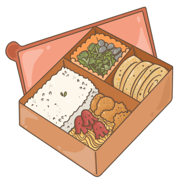

TheHome

Introducing "Bento Boxes: Bento Boxe's Exquisite Selections" - a culinary journey that combines artistry and flavor, where every bento box is meticulously crafted with a harmonious blend of fresh ingredients and captivating presentation. Indulge in the tantalizing delights of Bento Boxe's bento creations, where each bite transports you to a world of taste and texture. Experience the perfect fusion of tradition and innovation as you embark on a flavorful adventure that will delight your senses and leave you craving for more. Welcome to the realm of Bento Boxes, where Bento Boxes brings culinary magic to every meal

Choose our bento boxes because we offer a delightful combination of premium ingredients, stunning presentation, diverse options, convenient portability, and a focus on balanced nutrition, ensuring a culinary experience that is both satisfying and nourishing.